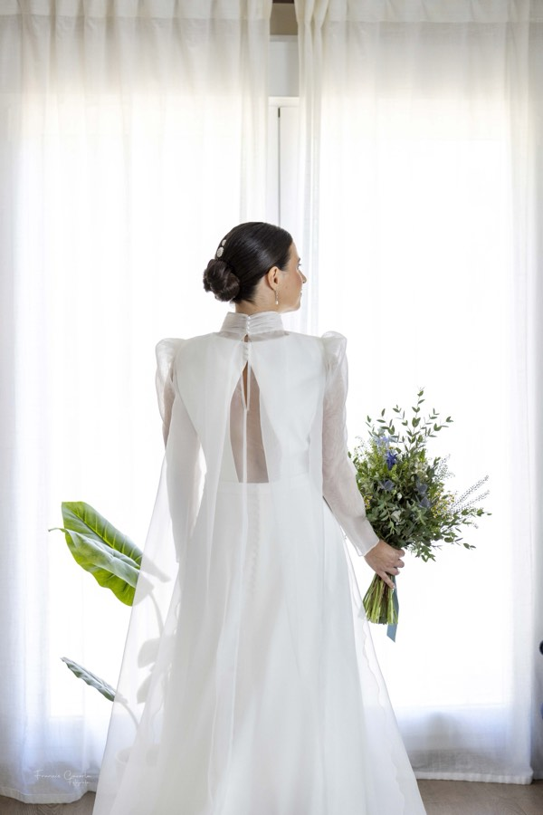
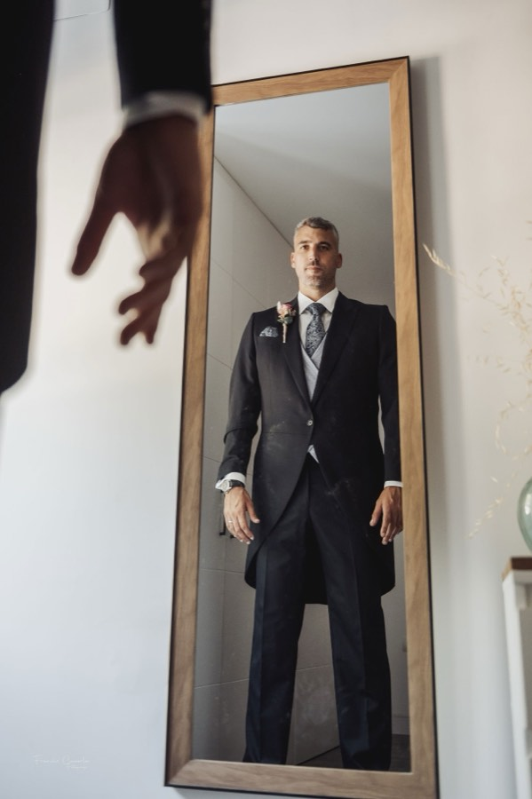
Capítulo I
Preparativos
Los nervios, los últimos detalles, el primer vistazo al espejo. Las horas previas también forman parte de la historia.
Demo de propuesta web diseñada por OperantiaWeb
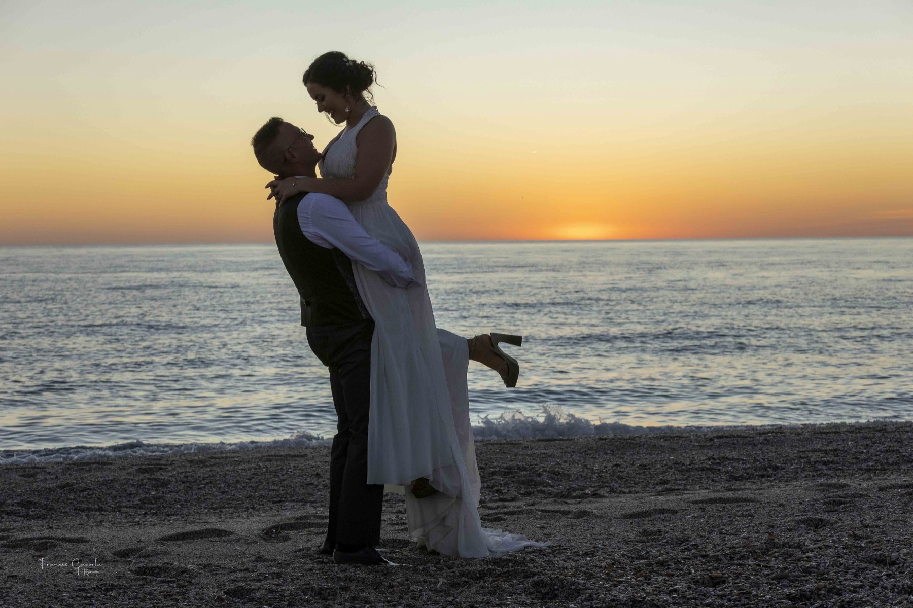
Francis CazorlaUna boda pasa en un día…pero los recuerdos se quedan para siempre.
01 — Sobre Francis
Francis Cazorla es fotógrafo profesional en Almería, con más de treinta años de oficio detrás de la cámara. Acompaña a cada pareja desde la preboda hasta el gran día, con una idea muy clara: contar la historia tal y como la vivisteis.
Busca imágenes naturales y emotivas. Las miradas, los abrazos, las lágrimas y las sonrisas que no se repiten y que, con los años, son las que más se agradecen.
«Un recuerdo, una emoción, un sueño, un instante para toda la vida.»
Miembro de AFPAL y de la Federación Española de Profesionales de la Fotografía y de la Imagen (FEPFI).
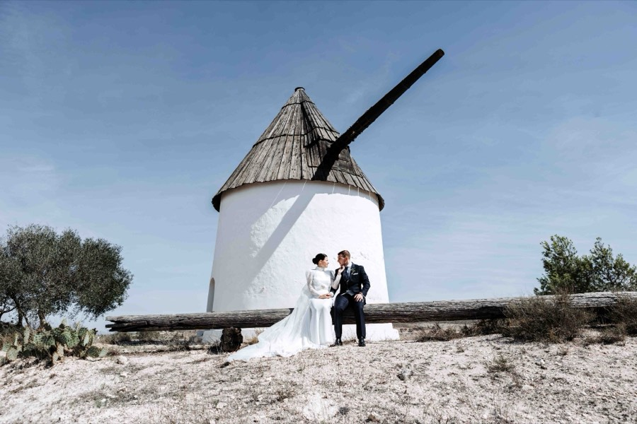
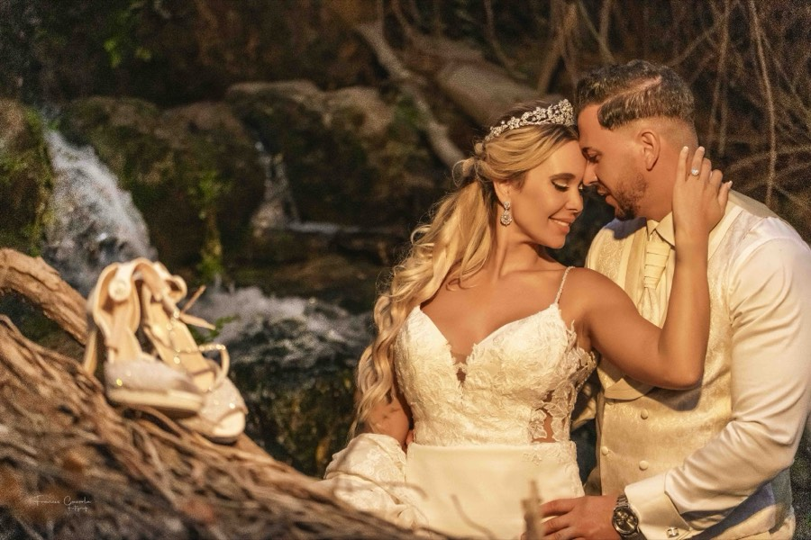
02 — Portfolio
Una selección de reportajes recientes: molinos, desierto, calles encaladas y mar. Pulsa en cualquier fotografía para verla a pantalla completa.
03 — Bodas
Un reportaje completo que cuenta el día entero: los preparativos, la ceremonia, vuestros retratos y el banquete. Sigue bajando y recorre una boda de principio a fin.


Capítulo I
Los nervios, los últimos detalles, el primer vistazo al espejo. Las horas previas también forman parte de la historia.
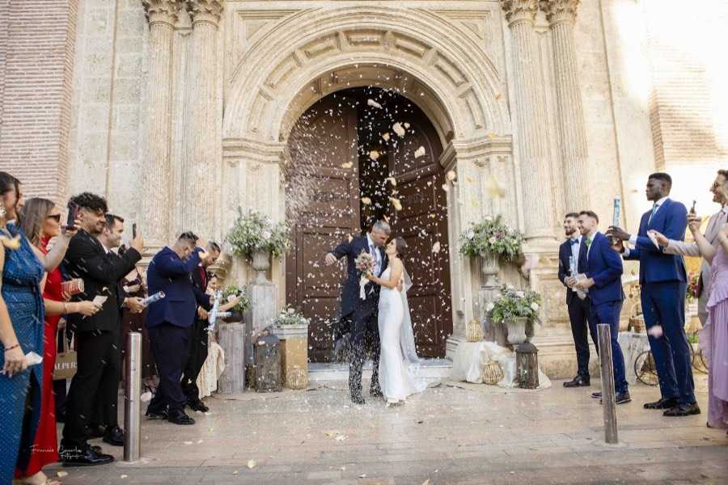
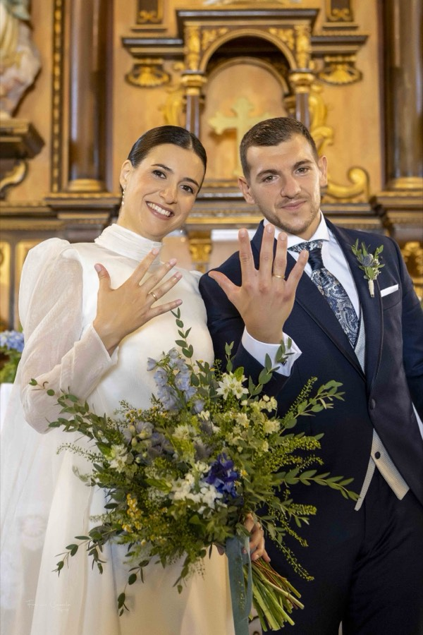
Capítulo II
El «sí, quiero», los anillos, la salida entre pétalos. Momentos que pasan en segundos y que se quedan para siempre.
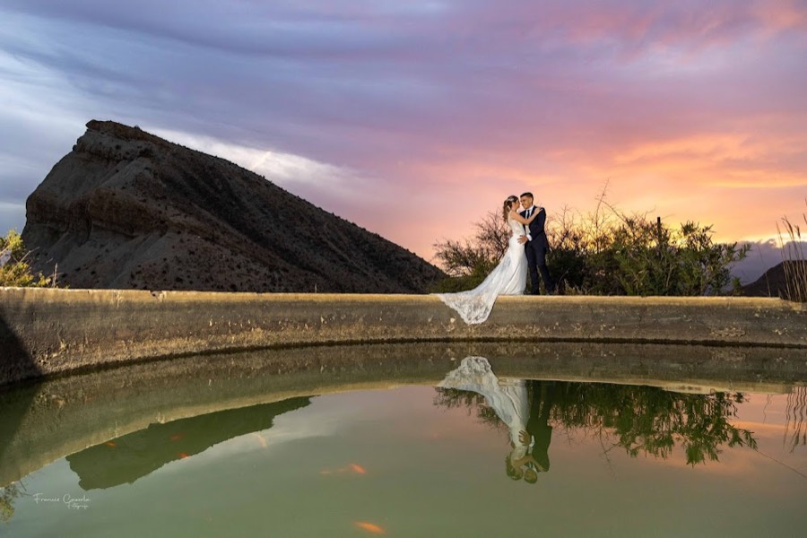
Capítulo III
Un rato solo para vosotros, con la mejor luz del día. Sin posados forzados: paseos, miradas y gestos de verdad.
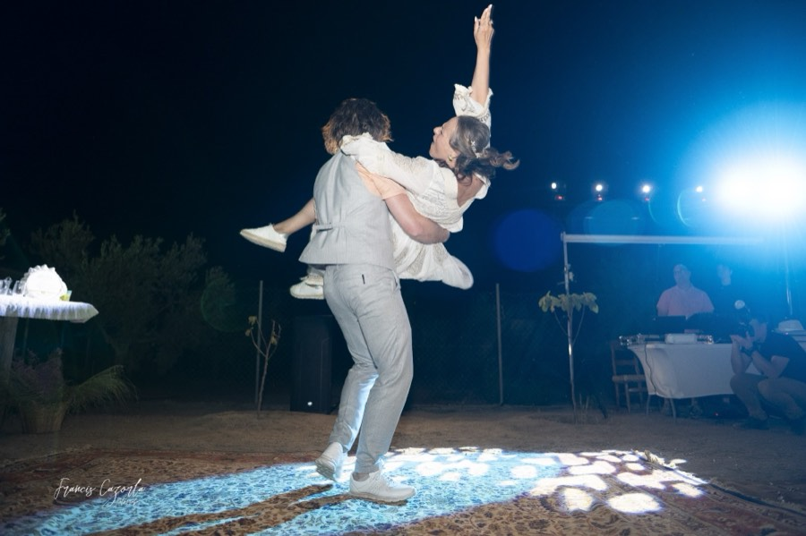
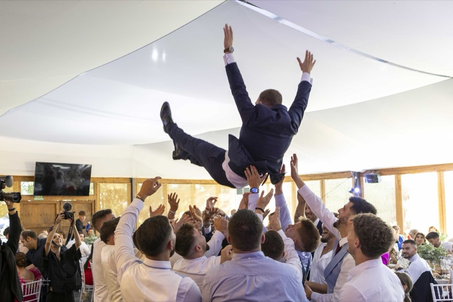
Capítulo IV
El banquete, el primer baile y la fiesta. La parte del día en la que todo el mundo se suelta… y salen las mejores fotos.
Lo espontáneo no se repite. Por eso lo importante es estar atento.
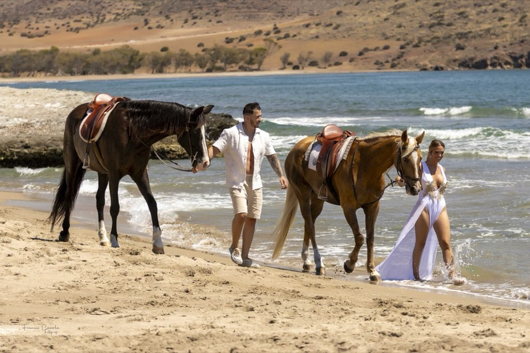
04 — Preboda y postboda
La preboda es la mejor forma de romper el hielo con la cámara antes de la boda. Como esta sesión en una de las playas de Almería: mar, caballos y la luz de la tarde.
Y cuando ya ha pasado todo, la postboda: una sesión tranquila, sin horarios ni nervios, para seguir contando vuestra historia.
Consultar disponibilidad05 — Bautizos y comuniones
Sección en preparación · pendiente de confirmar con Francis
La misma mirada natural de sus bodas, para un día íntimo y familiar.
Pendiente de verificar: servicio, tipo de reportaje y condiciones
Francis ha publicado reportajes de comunión en su blog. Aquí irá la propuesta actual para este tipo de reportaje.
Pendiente de verificar: servicio actual y condiciones
06 — Servicios
Lo que Francis ofrece a las parejas. Las condiciones de cada reportaje se consultan directamente con él.
El día completo: preparativos, ceremonia, retratos y banquete.
Una sesión antes de la boda para conoceros y perder la vergüenza ante la cámara.
Una sesión tranquila después del gran día.
Reportaje en vídeo para revivir los mejores momentos de la boda.
Imágenes aéreas para completar el reportaje.
Álbum personalizado, minialbumes y álbum digital.
Fotografías en alta resolución, en USB o en formato digital.
07 — Cómo trabaja
Su forma de trabajar, contada con sus propias ideas.
Nada de posados forzados y artificiales. Francis busca los momentos espontáneos, los que surgen solos cuando nadie mira a la cámara.
La idea es que os relajéis y disfrutéis de vuestro día. De contarlo ya se encarga él.
Las miradas, los abrazos, las lágrimas y las sonrisas. Los pequeños gestos que cuentan la historia tal y como la vivisteis.
Después de la boda revisáis todas las fotografías y escogéis vuestras favoritas para el álbum. Y durante la edición contáis con su aprobación antes de la entrega.
Recreación ilustrativa con fotografías de Francis
08 — Álbumes
Las fotos que se quedan en el móvil se olvidan; las que se imprimen, se heredan. Por eso el reportaje termina en un álbum personalizado, con las fotografías que vosotros mismos elegís.
El álbum de siempre, con un diseño exclusivo para vuestra boda.
Una composición más libre, también exclusiva.
También hay minialbumes y álbum digital.
09 — Contacto